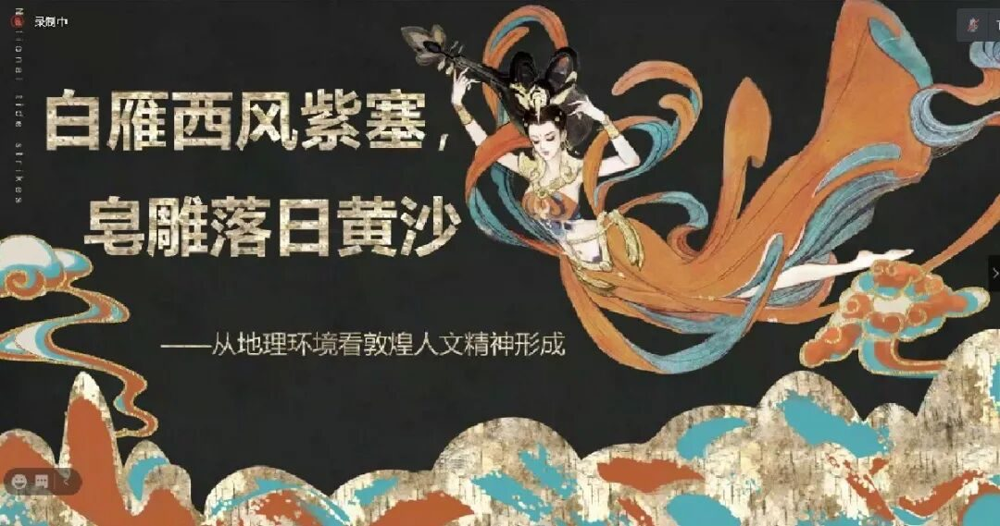
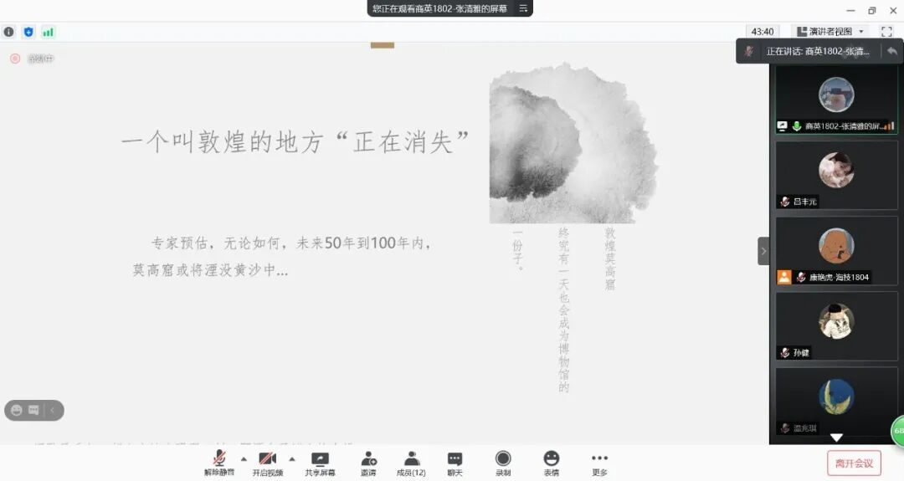
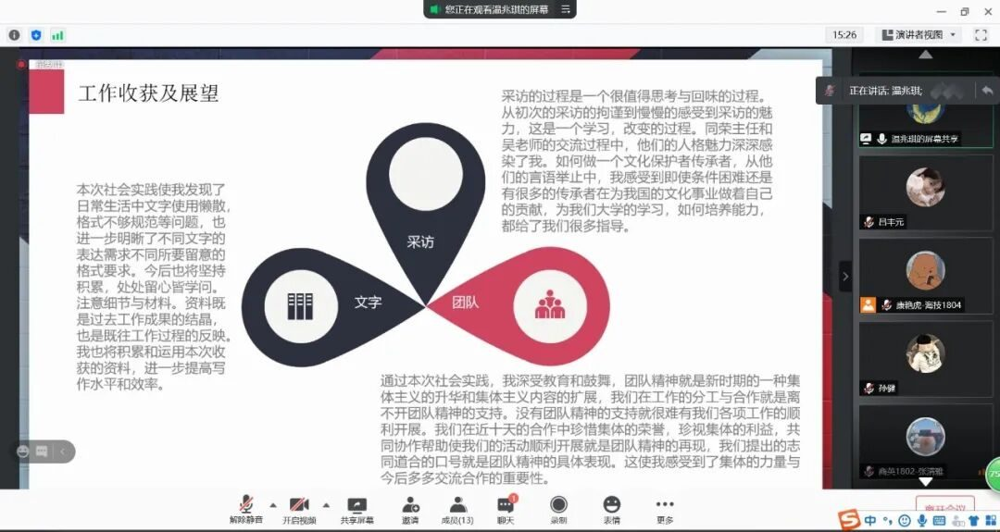
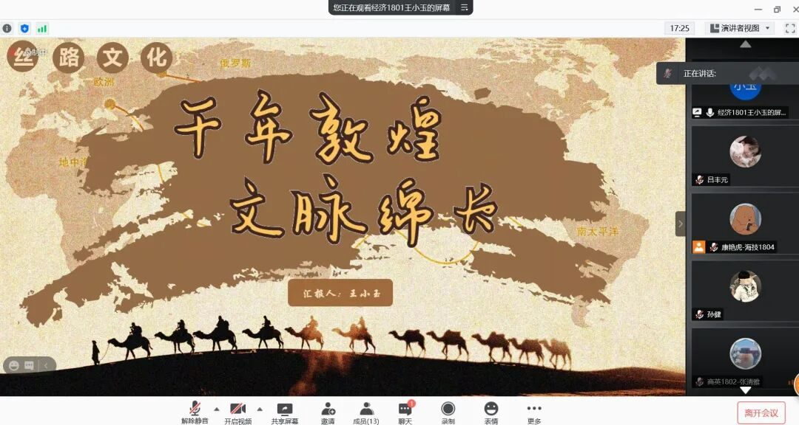
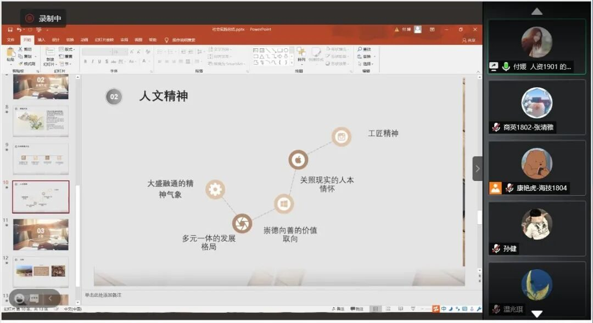
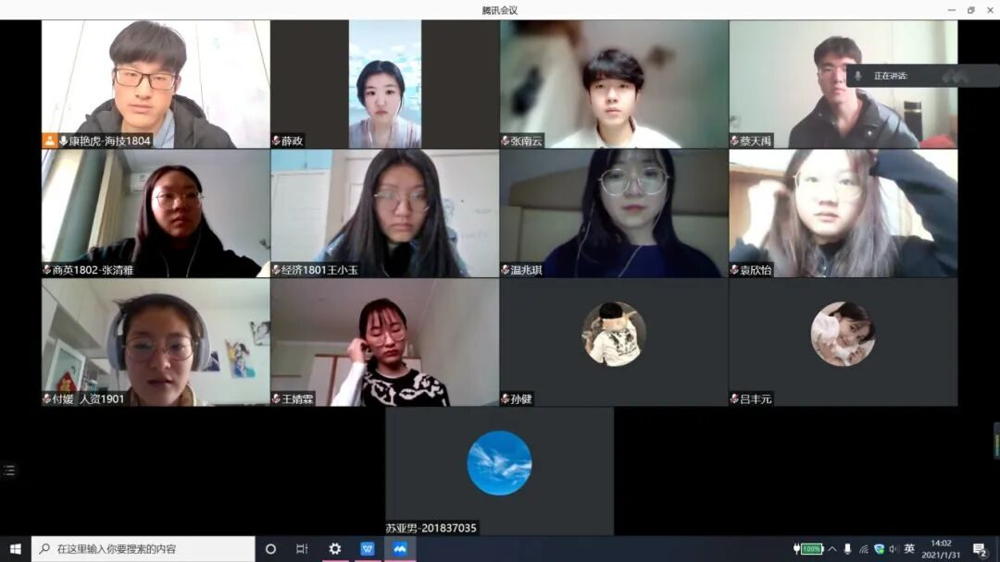

敦煌沙洲，行者有感


苍穹无边，砾石丛生，
漫漫黄沙，茫茫戈壁，
大漠孤烟，长河落日。
行程最后一日，
行者们分享着各自的感悟与体会：

她说，它是甘、青、新三界之心，是3.12万千土地之合；
他说，它是历史文化名城，是东亚文化之都；

她说，那有古筝琵琶，箜篌羯鼓；
他说，那有高窟鸣沙，崖壁披霞；

她说，缘在敦煌，情系敦煌，那举世闻名的艺术宝库令人叹止；
他说，白雁西风，皂雕落日，那艺术品成长的土地上包含着历代人民的汗水与力量；

她说，驼铃不再悠悠，商队不再络绎，使者不再往来，古今多少事，都付笑谈中；
她说，那秦时的明月汉时的关，那亘古的戈壁滩，那旋舞不灭的漫漫黄沙；

他说，它像让人品味不尽的意蕴深长的一首诗；
他说，它像让人听不完的悠远回旋的一支古曲。

来源 | 行者无疆实践团
文字 | 张南云
排版 | 薛政
审核 | 康艳虎 张清雅
行者无疆实践团
QQ：2758025831

随行者一起认识世界
长按二维码